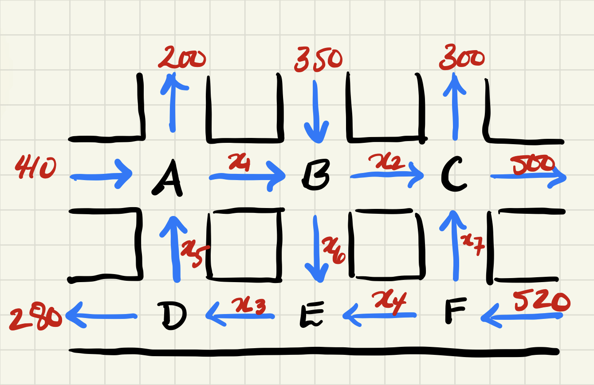

Prior to beginning this problem set, consider reading the Problem Set Success Guide Section A.1 for advice and clarity around expectations for Problem Sets in this course. Upload your solutions to all problems on this page to gradescope as a single .pdf file, remembering to assign pages appropriately for each question. Complete instructions for Problem Sets are available on Canvas.
ProblemA.3.1.(Problem 1): Application to Traffic Modelling.
You are working for a traffic consulting firm that is deciding how best to build a bike line in downtown Banff, Canada. The centre that you are studying is depicted below; every street is a one-way street with directions as shown, and there are six intersections denoted by \(A, B, C, D, E,\) and \(F\text{.}\) The numbers on the perimeter denote the total number of vehicles through the given direction in rush-hour and were obtained by using historical data from the City of Banff. In order to provide the City of Banff with the most informed options, you need to determine the unknown traffic flows \(x_1,\dots, x_7\) labelled below.

Traffic flow counts for a portion of a map of the City of Banff.
Figure66.Traffic flow counts for a portion of a map of the City of Banff.
For each of the six intersections depicted in Figure 66, the total number of vehicles entering the intersection is equal to the total number of vehicles leaving the intersection. For instance, looking at intersection \(A\text{,}\) we find:
Write down the system of linear equations that arises from considering all six intersections.
(b)
Are you able to say definitively what the values of \(x_1,\dots, x_7\) are? If so, explain and demonstrate how to find them. If not, what additional information do you need to ask the City of Banff to collect or otherwise provide for you in order to best inform their design?
Solution.
(a)
Following the procedure at each intersection, we obtain the following six equations:
Using Octave to calculate the corresponding RREF, we find that \(x_6,x_7\) are free variables and, after setting \(x_6=a,x_7=b\) and solving for the bound variables, we get:
In particular, the equations are consistent, but there isn’t a unique solution, which means we need additional information or constraints from the City of Banff to pin down our data. One way to do this is ask the City of Banff for specific values of \(x_6,x_7\) based on historical data, or to send an intern out at the corresponding streets to collect this information.
The set \(W\) is a subspace. Below are two attempted proofs of the fact that \(W\) is closed under vector addition. Both of them are invalid; explain why.
(a)
Let \(\vec{u}=\left[\begin{array}{c}1\\4\\1\\1\end{array}\right],\vec{v}=\left[\begin{array}{c}2\\-1\\1\\-1\end{array}\right].\) Then both \(\vec{u},\vec{v}\) are elements of \(W\text{.}\) Their sum is
it follows that \(\vec{w}\) is also in \(W\) and so \(W\) is closed under vector addition.
(b)
If \(\left[\begin{array}{c}x\\y\\z\\w\end{array}\right],\left[\begin{array}{c}a\\b\\c\\d\end{array}\right]\) are in \(W\text{,}\) we need to show that \(\left[\begin{array}{c}x+a\\y+b\\z+c\\w+d\end{array}\right]\) is also in W. To be in \(W\text{,}\) we need
by moving everything over to the left hand side. Since we are assuming that \(x+y-3z-2w=0\) and \(a+b-3c-2d=0\text{,}\) it follows that \(0=0\text{,}\) which is true, which proves that vector addition is closed.
Solution.
(a)
While the calculations in the attempted proof are valid, they only indicate that a specific example of two vectors \(\vec{u},\vec{v}\) satisfy the given condition. That is, the argument is not general: a correct proof would have to argue that \(\vec{u}+\vec{v}\in W\) for any choice of \(\vec{u},\vec{v}\) and not just these two choices.
(b)
The author begins by starting with the assumption that
and then concludes that \(0=0\text{.}\) This isn’t what we want to do for two reasons: Firstly, we already know that \(0=0\text{,}\) so we haven’t learned anything new. More importantly, we do not yet know that the equation
To correctly prove this statement, we could start with our assumptions \(x+y-3z-2w=0\) and \(a+b-3c-2d=0\) and explain how to manipulate them in order to show that
Consider \(n\) vectors \(\vec{v}_1,\dots, \vec{v}_n\) living inside \(\IR^m\text{.}\)
(a)
If \(n <m\text{,}\) explain why it is impossible for these vectors to span all of \(\IR^m\text{.}\) That is, prove Fact 2.2.5.
(b)
If \(m <n\text{,}\) explain why it is impossible for these vectors to be linearly independent.
Solution.
(a)
To decide if the set of vectors \(\left\{\vec{v}_1,\dots, \vec{v}_n\right\}\) spans all of \(\IR^m\text{,}\) we can use Fact 2.2.8. Consider the matrix \(\RREF[\vec{v}_1\cdots\vec{v}_n]\text{.}\) This matrix will have \(m\) rows and \(n\) columns. If we assume that \(n < m\text{,}\) then the maximum number of pivots that can appear in \(\RREF[\vec{v}_1\cdots\vec{v}_n]\) is equal to \(n\) since each pivot is in a unique row and column. It follows that there must be at least one row in \(\RREF[\vec{v}_1\cdots\vec{v}_n]\) that is missing a pivot and, therefore, these vectors cannot span all of \(\IR^m\text{.}\)
(b)
To decide if the set of vectors \(\left\{\vec{v}_1,\dots, \vec{v}_n\right\}\) is linearly independent, we can use Fact 2.4.5. Consider the matrix \(\RREF[\vec{v}_1\cdots\vec{v}_n]\text{.}\) This matrix will have \(m\) rows and \(n\) columns. If we assume that \(m < n\text{,}\) then the maximum number of pivots that can appear in \(\RREF[\vec{v}_1\cdots\vec{v}_n]\) is equal to \(m\) since each pivot is in a unique row and column. It follows that there must be at least one column in \(\RREF[\vec{v}_1\cdots\vec{v}_n]\) that is missing a pivot and, therefore, these vectors cannot be linearly independent.
SubsectionA.3.1Background Information: The Dot-Product
The purpose of the next few problems are to introduce you to some new definitions and concepts, namely, that of dot product and orthogonality. In doing so, you are being asked to practice working with new definitions and to explore ideas related to them. This short section contains all of the background information you need to complete the problems and you’ll get the most learning benefit by working on these exercises without consulting further outside sources.
DefinitionA.3.4.
Given two Euclidean vectors \(\vec{u}=\left[\begin{array}{c}u_{1}\\u_{2} \\\vdots\\u_{n}\end{array}\right]\) and \(\vec{v}=\left[\begin{array}{c}v_{1}\\v_{2} \\\vdots\\v_{n}\end{array}\right]\text{,}\) the dot product of \(\vec{u}\) and \(\vec{v}\) is defined to be:
Interpreting the vector \(\vec{u}\) as an arrow starting at the origin and point in the direction of \(\vec{u}\text{,}\) this norm agrees with our usual notion of length.
Lastly, the dot product can be used to calculate the angle between two vectors. Consider two vectors \(\vec{u}\) and \(\vec{v}\) and interpret them as arrows with their tails at the origin. If \(\theta\) denotes the angle between these vectors, then it is computed by using the following formula:
The angle \(\theta\) measured from \(\vec{u}\) to \(\vec{v}.\)
Figure67.Angle between two vectors.
Consider working on the following exercise to practice these terms before attempting the next few problems. Answers are provided here for you to check your work; do not include answers to this exercise in your Problem Set solutions.
CheckpointA.3.5.
(a)
Let \(\vec{u}=\left[\begin{array}{c}1\\1\\1\end{array}\right], \vec{v}=\left[\begin{array}{c}1\\2\\3\end{array}\right], \vec{w}=\left[\begin{array}{c}1\\0\\1\end{array}\right]\text{.}\) Calculate \(\vec{u}\bullet\vec{v}\text{,}\)\(||\vec{w}||\text{,}\) and determine the angle between \(\vec{v}\) and \(\vec{w}\text{.}\)
(b)
Explain why \(\vec{u}\bullet\vec{v}=\vec{v}\bullet\vec{u}\) for every choice of Euclidean vector \(\vec{u},\vec{v}\text{.}\)
If \(\vec{u}=\left[\begin{array}{c}u_1\\\vdots\\u_n\end{array}\right]\) and \(\vec{v}=\left[\begin{array}{c}v_1\\\vdots\\v_n\end{array}\right],\) then by using Definition A.3.4, we find that
There are several equivalent ways to describe planes in \(\IR^3\text{.}\) One way to do so is to provide its equation:
\begin{equation*}
ax+by+cz=d,
\end{equation*}
where \(a,b,c,d\in\IR\text{.}\) Another way to describe a plane is to pick a point \(\vec{p}\) on the plane and a normal vector\(\vec{n}\text{;}\) then, the plane is described as the set of all vectors \(\vec{x}\) for which \(\vec{x}-\vec{p}\) is perpendicular to \(\vec{n}\text{.}\)
If you are given a normal vector \(\vec{n}\in\IR^3\) and a point \(\vec{p}\in\IR^3\text{,}\) explain how to find an algebraic equation for the plane \(P\) that with normal vector \(\vec{n}\) passing through \(\vec{p}\text{.}\)
(c)
Continuing from the above, suppose instead you are given an algebraic equation for a plane:
\begin{equation*}
ax+by+cz=d.
\end{equation*}
Explain and demonstrate how to find a point on the plane and its normal vector.
Solution.
(a)
Using a combination of our dot product properties, the following chain of equalities explains the result:
Suppose that we are given a normal vector \(\vec{n}=\left[\begin{array}{c}a\\b\\c\end{array}\right]\) and that \(\vec{p}=\left[\begin{array}{c}x_0\\y_0\\z_0\end{array}\right]\text{.}\) We are given that a plane is described by consider all vectors \(\vec{x}=\left[\begin{array}{c}x\\y\\z\end{array}\right]\) for which \(\vec{n}\) is perpendicular to \(\vec{x}-\vec{p}\text{.}\) It follows, then, that
where \(d=ax_0+by_0+cz_0\text{.}\) Thus, we’ve recovered an algebraic equation for the plane.
(c)
To find a point \((x_0,y_0,z_0)\text{,}\) we can basically guess and check. At least one of the coefficients \(a,b,c\) must be non-zero. For sake of argument, if we assume that \(a\neq 0\text{,}\) then the point \((\frac{d}{a},0,0)\) satisfies the equation and thus lies on the plane.
For the second part, if \((x_0,y_0,z_0)\) is some specific point on the plane and \((x,y,z)\) is some other general point, then we know the following are true:
from which it follows that the vector \(\vec{n}=\left[\begin{array}{c}a\\b\\c\end{array}\right]\) works as the normal vector.
ProblemA.3.7.(Problem 5).
Let \(W\subseteq\IR^n\) be a subspace. If \(\vec{u}\in\IR^n\) is orthogonal to all vectors in \(W\text{,}\) we will say that \(\vec{u}\) is orthogonal to \(W\). The set of all vectors \(\vec{u}\) that are orthogonal to \(W\) is called the orthogonal complement of \(W\) and is denoted by \(W^\perp\text{;}\) in other words, we have
For example, if \(W=\textrm{span}\left\{\begin{bmatrix}1\\1\end{bmatrix}\right\}\text{,}\) then \(\vec{u}=\begin{bmatrix}1\\-1\end{bmatrix}\) lives in \(W^\perp\) since it’s perpendicular to any multiple of \(\begin{bmatrix}1\\1\end{bmatrix}\text{,}\) but the vector \(\begin{bmatrix}1\\0\end{bmatrix}\) does not live in \(W^\perp\text{.}\) The set \(W^\perp\) is always a subspace, as you will prove below.
(a)
Prove that \(W^\perp\) is always a subspace of \(\IR^n\text{.}\)
(b)
If \(W=\vspan\{\vec{v}_1,\dots, \vec{v}_n\}\text{,}\) explain why \(\vec{u}\in W^\perp\) if and only if \(\vec{u}\) is orthogonal to each of the vectors \(\vec{v}_1,\dots, \vec{v}_n\) individually.
(c)
Suppose that \(W=\vspan\left\{\begin{bmatrix}2\\-1\\1\end{bmatrix},\begin{bmatrix}0\\-3\\7\end{bmatrix}\right\}\text{.}\) Find a set of vectors that spans \(W^\perp\text{.}\)
Hint.
The phrase “If and only if” in part (b) indicates that there are two statements to prove. First, you must explain why, if \(\vec{u}\in W^\perp\text{,}\) it follows that \(\vec{u}\) is perpendicular to each of the vectors in \(\setList{\vec{v}_1,\dots, \vec{v}_n}\text{.}\) Second, you must also prove that, if \(\vec{u}\) is perpendicular to all the vectors in \(\setList{\vec{v}_1,\dots, \vec{v}_n}\text{,}\) then it follows that \(\vec{u}\in W^\perp\text{.}\)
Solution.
(a)
Referring to the definition of subspace, we have to check that \(W^\perp\) satisfies all three conditions:
First, we check that \(\vec{0}\in W^\perp\text{.}\) Since \(\vec{0}\bullet\vec{w}\) for all \(\vec{w}\in W\text{,}\) it follows that, indeed, we have \(\vec{0}\in W^\perp\text{.}\)
Next, we check closure under addition. Suppose that we have two vectors \(\vec{u},\vec{v}\) and that we know that \(\vec{u},\vec{v}\) both live in \(W^\perp\text{.}\) By definition, it means that we know that
for all \(\vec{w}\in W\) and so \(\vec{u}+\vec{v}\) lives in \(W^\perp\text{.}\)
Lastly, we check closure under scalar multiplication. Suppose that we have a \(\vec{u}\) and that we know that \(\vec{u}\) lives in \(W^\perp\text{.}\) By definition, it means that we know that
for all \(\vec{w}\in W\) and so \(c\vec{u}\) lives in \(W^\perp\text{.}\)
(b)
Most critically, we must explain two things separately. First, we need to explain why, if \(\vec{u}\in W^\perp\text{,}\) then \(\vec{u}\) is perpendicular to the vectors in the set \(\{\vec{v}_1,\dots, \vec{v}_n\}\text{.}\) Secondly, we also have to explain why, if \(\vec{u}\) is perpendicular to the vectors in \(\{\vec{v}_1,\dots, \vec{v}_n\}\text{,}\) then we can conclude that \(\vec{u}\in W^\perp\text{.}\)
Let’s deal with the first statement first. If we know that \(\vec{u}\in W^\perp\text{,}\) then \(\vec{u}\) is perpendicular to all vectors in \(W\text{.}\) Okay, but all the vectors in the set \(\{\vec{v}_1,\dots, \vec{v}_n\}\) live in \(W\) and so \(\vec{u}\) must therefore be perpendicular to them.
Now let’s deal with the second statement. Suppose all we know is that \(\vec{u}\) is perpendicular to \(\vec{v}_1,\dots, \vec{v}_n\text{.}\) If we take some arbitrary vector \(\vec{w}\in W\text{,}\) we now need to argue that \(\vec{u}\) is perpendicular to it as well. For this, since we are given that \(W=\vspan\{\vec{v}_1,\dots, \vec{v}_n\}\text{,}\) it follows that we can find scalars \(c_1,\dots, c_n\) for which
It follows that \(\vec{u}\) is perpendicular to \(\vec{w}\) and since \(\vec{w}\) was arbitrary, \(\vec{u}\in W^\perp\text{.}\)
(c)
Well, if \(\vec{u}=\left[\begin{array}{c}x\\y\\z\end{array}\right]\in W^\perp\text{,}\) then we know by part (b) that this is the same as saying that \(\vec{u}\) is perpendicular to our two vectors individually. That is, we know that